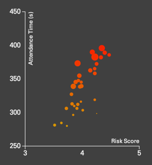
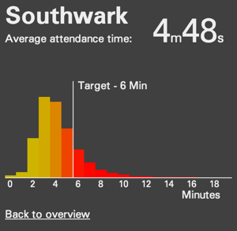

Below in this page is an interactive map of London for each borough visualising the degree of risk from fire incidents as described in the Methodology section of this website.
The fire stations are shown as green dots if simulated as open or black if closed. Hovering with the mouse pointer over one station borough shows their name in a legend box in the top right corner of the map.
The user can quickly switch from London’s current fire stations configuration to the simulation of the closure of the ten designated stations by clicking on  .
.
It is possible to arbitrarily simulate the closure of any other station by selecting and then clicking on the chosen stations to alternatively close or open them. Calculations in this mode may take some time and you will need to be patient. Disabling analysis mode will reset the configuration of the stations to the default.
The checkbox switches between the visualisation of the scores based on the stations’ attendance time only to the scores that are also weighted by the volume of people potentially impacted by the incidents.
On the left of the map you can see a bubble chart that positions each borough vs its risk factor scoring: response time only on the y-axis and response time and volume of people on the x-axis. The size of the bubbles is proportional to the boroughs’ respective population. The closer you are to the top right corner of the diagram the higher is the risk score relative to other boroughs. Hovering on the bubbles show which borough they correspond to.

Alternatively, by clicking in the map on one borough in particular, you can see its expected response times distribution vs the set of stations currently being simulated as closed. You go back to the previous view by clicking on the “Back to overview” text.
